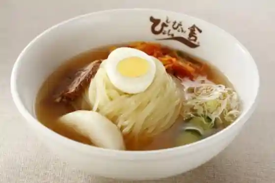
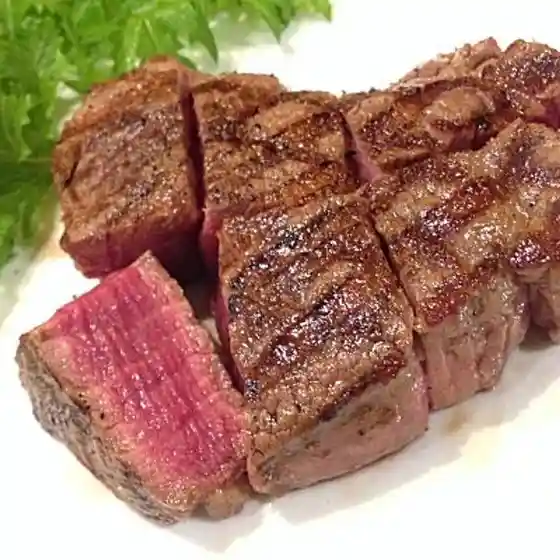
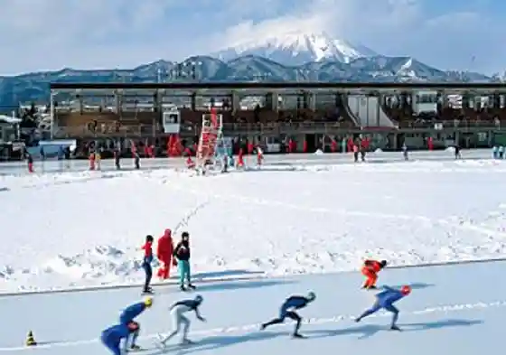
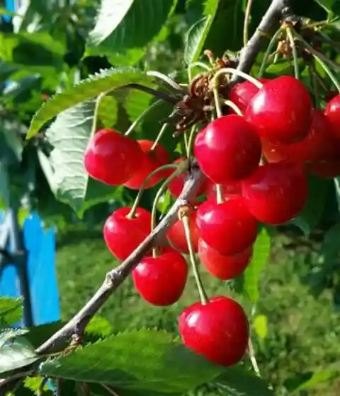

Pyonpyon Sha Inari Town Main Shop
Morioka, Iwate · 019-646-0541 · Official / source link

Resutoranpaionia Ranch
Morioka, Iwate · 019-656-6224 · Official / source link

Iwateken Ei Su Ga to Ba
Morioka, Iwate · 019-641-1530 · Official / source link

Taya Orchard
Morioka, Iwate · 019-696-2742 · Official / source link

Iwa Hora Mizumi Resutohausu
Morioka, Iwate · 019-681-5039 · Official / source link
Asa Shima Kanko Ringo Sono
Morioka, Iwate · 019-696-3344 · Official / source link
Morioka Reimen
Morioka, Iwate · 019-626-7539 · Official / source link
Shokudo Sono
Morioka, Iwate · 019-651-4590 · Official / source link
Yoshikuni Hakimono Mise (Nambu Kiri Geta)
Morioka, Iwate · 019-662-6215 · Official / source link
Iwateken Ei Sports Park
Morioka, Iwate · 019-641-1127 · Official / source link
Morioka Takayariina (Morioka Sogo Ariina)
Morioka, Iwate · 019-658-1212 · Official / source link
Azumaya
Morioka, Iwate · 0120-73-3130 · Official / source link
Michi no Ku Koka Korabotoringurinku (Morioka Aisurinku)
Morioka, Iwate · 019-601-5001 · Official / source link
Tonan Tsudoi Forest
Morioka, Iwate · 019-638-2270 · Official / source link
Marushiro Farm (2022 Nen Ha Shika no Shokugai Niyori Kaien Nashi)
Morioka, Iwate · 019-624-5978 · Official / source link
Morioka Dagashi Sekiguchi Ya Kashi Ho
Morioka, Iwate · 019-622-4509 · Official / source link
Morioka Jaja Men (Morioka)
Morioka, Iwate · 019-604-3305 · Official / source link
Daimaru Ya (Ari) Murata Kashi Ho
Morioka, Iwate · 019-622-3444 · Official / source link
Morioka Keibajo Oro Park
Morioka, Iwate · 019-651-2999 · Official / source link
Jaja Men to Sake no Sakana Kisaku
Morioka, Iwate · 019-625-0033 · Official / source link
Matsumoto Ringo Sono (Buruberii Tsumi Tori)
Morioka, Iwate · 019-696-2531 · Official / source link
Hisashi Hisashi En
Morioka, Iwate · 019-652-7722 · Official / source link
Zaimoku Town Yo City
Morioka, Iwate · 019-623-3845 · Official / source link
Morioka Kantorii Club
Morioka, Iwate · 019-624-4476 · Official / source link
Meimei Ie
Morioka, Iwate · 019-654-7180 · Official / source link
Yakiniku Morioka Reimen Hige
Morioka, Iwate · 019-689-2805 · Official / source link
Ki no Ene Main Shop
Morioka, Iwate · 019-624-2854 · Official / source link
Peiwan
Morioka, Iwate · 019-623-6400 · Official / source link
Daido En
Morioka, Iwate · 019-654-5588 · Official / source link
Morioka Jaja Men HOT jaja
Morioka, Iwate · 019-908-2036 · Official / source link
Jaja Men Ya Kaori Sho (Kojan)
Morioka, Iwate · 019-626-2336 · Official / source link
Hatsu Koma Main Shop
Morioka, Iwate · 019-651-7184 · Official / source link
Naotoshi Iori
Morioka, Iwate · 019-624-0441 · Official / source link
Ginga Rikyu
Morioka, Iwate · 019-606-3739 · Official / source link
Iwa Hora Mizumi Kasseika Center
Morioka, Iwate · 019-681-5141 · Official / source link
no Village Resutoran (Aji no Sho Tengu)
Morioka, Iwate · 019-654-2201 · Official / source link
Morioka Yonetsu Riyo Kenko Zoshin Center
Morioka, Iwate · Official / source link
Nambu Tekki
Morioka, Iwate · 019-689-2336 · Official / source link
Wankosoba (Morioka)
Morioka, Iwate · 019-604-3305 · Official / source link
Nambu Sembei Morioka Sembei Mise
Morioka, Iwate · 019-622-6593 · Official / source link
Nambu Sembei Shinise Shirasawa Sembei Mise
Morioka, Iwate · 019-622-7224 · Official / source link
Rara Iwate
Morioka, Iwate · 019-626-8178 · Official / source link
Yabu Ya Morioka Eki Fezan Mise
Morioka, Iwate · 019-654-7689 · Official / source link
Morioka Kodomo Science Museum
Morioka, Iwate · 019-634-1171 · Official / source link
Yamanaka Ya Morioka Odori Mise
Morioka, Iwate · 019-626-2660 · Official / source link
Yabu Kawa Soba
Morioka, Iwate · 019-681-5117 · Official / source link
Yakiniku Resutoran Yonai
Morioka, Iwate · 019-623-2983 · Official / source link
Yakiniku Reimen Yamato Morioka Mise
Morioka, Iwate · 019-646-0288 · Official / source link
Yakiniku Reimen Morishige
Morioka, Iwate · 019-635-0737 · Official / source link
Yakiniku Sakaba Maguma
Morioka, Iwate · 019-613-6969 · Official / source link
Yakiniku Reimen Jo Rokaku
Morioka, Iwate · 019-654-8752 · Official / source link
Morioka Town Ie Monogatari Kan
Morioka, Iwate · 019-654-2911 · Official / source link
Morioka Hai Land Kantorii Club
Morioka, Iwate · 019-659-1234 · Official / source link
Morioka Tsunagi Onsen
Morioka, Iwate · 019-689-2109 · Official / source link
Morioka Jaja Men
Morioka, Iwate · 019-656-2338 · Official / source link
Morioka Jajamen Sho Kitsu Mise Fezan Mise
Morioka, Iwate · 019-622-0345 · Official / source link
Morioka Jaja Men Akiwo
Morioka, Iwate · 019-653-5959 · Official / source link
Morioka Jajamen
Morioka, Iwate · 019-623-9173 · Official / source link
Morioka Jaja Men (Morioka)
Morioka, Iwate · 019-604-3305 · Official / source link
Morioka Ritsu Sogo Puru
Morioka, Iwate · 019-634-0450 · Official / source link
Morioka Ritsu Oide Ski Area
Morioka, Iwate · 019-683-2215 · Official / source link
Morioka Yonetsu Riyo Kenko Sokushin Center
Morioka, Iwate · 019-662-1414 · Official / source link
Morioka Shokudo Ueda Mise
Morioka, Iwate · 019-656-1115 · Official / source link
Morioka Chuo Koen Bibaterasu BeBA TERRACE
Morioka, Iwate · 019-639-9057 · Official / source link
Morioka Chuo Kominkan Kyu Nambu Shi Bettei Garden
Morioka, Iwate · 019-654-5366 · Official / source link
Morioka Toyama Forest Park
Morioka, Iwate · 019-681-5132 · Official / source link
Yakiniku Reimen Koma Shokudo
Morioka, Iwate · 019-636-3554 · Official / source link
Kozukata Jajamen
Morioka, Iwate · 019-651-7576 · Official / source link
Fujiwara Yoho Ba
Morioka, Iwate · 019-624-3001 · Official / source link
Fukuda Pan
Morioka, Iwate · 019-622-5896 · Official / source link
Himegami Yamaichi Motosugi Enchi Campground
Morioka, Iwate · 019-683-3852 · Official / source link
Hakuryu
Morioka, Iwate · 019-624-2247 · Official / source link
Nagai no Dainen Hotoke Kembu
Morioka, Iwate · 019-639-9067 · Official / source link
Tohoku Nogyo Kenkyu Center Na no Hana Kokai
Morioka, Iwate · 019-643-3414 · Official / source link
Senryu
Morioka, Iwate · 019-622-5428 · Official / source link
Sakura Park Himegami
Morioka, Iwate · 019-683-3852 · Official / source link
Sakura Park Nitto Park Gorufu Ba
Morioka, Iwate · 090-9745-8654 · Official / source link
SPA Sento Yukko Morioka
Morioka, Iwate · 019-647-7500 · Official / source link
Suteki Teppan Ryori Wa Kana
Morioka, Iwate · 019-653-3333 · Official / source link
KK Sakura Kao Shuzo
Morioka, Iwate · 019-622-6800 · Official / source link
Go Mai Hashi Wainarii
Morioka, Iwate · 019-621-1014 · Official / source link
Sato Masa Suke
Morioka, Iwate · 019-659-3338 · Official / source link
Suzuki Sha Tei
Morioka, Iwate · 019-659-3338 · Official / source link
Morioka Tezu Kuri Village
Morioka, Iwate · 019-689-2201 · Official / source link
Tokiwazu Rinchu
Morioka, Iwate · 019-659-3338 · Official / source link
Iwateken Ei Gym
Morioka, Iwate · 019-647-1010 · Official / source link
Nitobe Inazo
Morioka, Iwate · 019-659-3338 · Official / source link
Sakana Town Shopping Street
Morioka, Iwate · 019-625-1515 · Official / source link
Kyu Ishii Kenrei Tei
Morioka, Iwate · 019-651-1606 · Official / source link
Hashimoto Happyaku Ni
Morioka, Iwate · 019-659-3338 · Official / source link
Hara Takashi
Morioka, Iwate · 019-636-1192 · Official / source link
Matsumoto Shunsuke
Morioka, Iwate · 019-658-1711 · Official / source link
Yonai Mitsumasa
Morioka, Iwate · 019-659-3338 · Official / source link
Morioka Rekishi Bunka Kan
Morioka, Iwate · 019-681-2100 · Official / source link
Sai Sonoko Issa Ryo
Morioka, Iwate · 019-653-4646 · Official / source link
O Kashi Tsukasa Yamazen
Morioka, Iwate · 019-622-2618 · Official / source link
Mikoda no Asa City
Morioka, Iwate · 019-652-1721 · Official / source link
Homusupan Michi no Kuakane Kai
Morioka, Iwate · 019-622-2648 · Official / source link
Urumi Kogei
Morioka, Iwate · 019-654-4615 · Official / source link
(Kabu) Asa Kai
Morioka, Iwate · 019-652-3111 · Official / source link
Ono Some Sai Tokoro
Morioka, Iwate · 019-652-4116 · Official / source link
Workshop Yume Mayu * Hana
Morioka, Iwate · 019-623-6509 · Official / source link
Bearen Jozosho
Morioka, Iwate · 019-606-0766 · Official / source link
Iihatobu Abenyu Zaimoku Town
Morioka, Iwate · 019-623-3845 · Official / source link
Morioka Dobutsu Park ZOOMO
Morioka, Iwate · 019-654-8266 · Official / source link
Enkoji
Morioka, Iwate · 019-604-3305 · Official / source link
(Sho Tenchi) Hakko no Chi
Morioka, Iwate · 019-604-3305 · Official / source link
Ishiwari Sakura
Morioka, Iwate · 019-604-3305 · Official / source link
Takamatsu Park (Takamatsu no Ike)
Morioka, Iwate · 019-681-7879 · Official / source link
Mariosu Tembo Shitsu
Morioka, Iwate · 019-621-5000 · Official / source link
Sakurayama Shrine
Morioka, Iwate · 019-622-2061 · Official / source link
Iwayama Lookout
Morioka, Iwate · 019-639-9057 · Official / source link
Tonan Folk History Museum
Morioka, Iwate · 019-638-7228 · Official / source link
Morioka Dashi Museum
Morioka, Iwate · 019-654-4895 · Official / source link
Koya Town Banya
Morioka, Iwate · 019-625-6002 · Official / source link
Iwate Ginko Aka Renga Kan
Morioka, Iwate · 019-622-1236 · Official / source link
Tachibana Seika Mise
Morioka, Iwate · 019-622-6692 · Official / source link
Fukazawa Beniko no no Hana Art Museum
Morioka, Iwate · 019-625-6541 · Official / source link
Joko Tera
Morioka, Iwate · 019-685-2520 · Official / source link
Himegami Yama
Morioka, Iwate · 019-683-3852 · Official / source link
Iwa Hora Mizumi
Morioka, Iwate · 019-683-3852 · Official / source link
Iwa Hora Mizumi Kazokuryoko Village
Morioka, Iwate · 019-681-5235 · Official / source link
Toyama Dam
Morioka, Iwate · 019-683-3852 · Official / source link
Hayasaka Highlands
Morioka, Iwate · 019-683-3852 · Official / source link
Shibutami Park (Dai 1 Go Takuboku Kahi)
Morioka, Iwate · 019-683-3852 · Official / source link
Ishikawa Takuboku Memorial Museum
Morioka, Iwate · 019-683-2315 · Official / source link
Hotoku Tera
Morioka, Iwate · 019-683-2616 · Official / source link
Kusa Murasaki Do
Morioka, Iwate · 019-622-6668 · Official / source link
Iwateken Tami Hall
Morioka, Iwate · 019-624-1171 · Official / source link
Ishikawa Takuboku
Morioka, Iwate · 019-683-2315 · Official / source link
Shiogama Bagu Mise
Morioka, Iwate · 019-622-5393 · Official / source link
Kasai Man Tsukasa
Morioka, Iwate · 019-659-3338 · Official / source link
Kashima Seiichi
Morioka, Iwate · 019-659-3338 · Official / source link
Kindaichi Kyosuke
Morioka, Iwate · 019-659-3338 · Official / source link
Kuji Jiro
Morioka, Iwate · 019-659-3338 · Official / source link
Sato Ko Kiyoshi
Morioka, Iwate · 019-659-3338 · Official / source link
Ishikawa Takuboku Kahi (Shimohashi Chugakko Kotei)
Morioka, Iwate · 019-604-3305 · Official / source link
Daiji Tera
Morioka, Iwate · 019-622-4709 · Official / source link
Yonai Josuijo
Morioka, Iwate · 019-623-1411 · Official / source link
Ryukoku Tera no Moriokashidare (Kuni no Tennenkinembutsu)
Morioka, Iwate · 019-604-3305 · Official / source link
Kiyoshi Yo In
Morioka, Iwate · 019-604-3305 · Official / source link
Kitakami Kawa
Morioka, Iwate · 019-604-3305 · Official / source link
Shonen Takuboku Zo
Morioka, Iwate · 019-604-3305 · Official / source link
Morioka Hogo Garden (Ichi no Kura Tei)
Morioka, Iwate · 019-646-1817 · Official / source link
Kyu Morioka Koto Norin Gakko (Iwatedaigaku Nogakubu Fuzoku Nogyo Kyoiku Museum)
Morioka, Iwate · 019-621-6678 · Official / source link
Juroku Rakan
Morioka, Iwate · 019-604-3305 · Official / source link
Shita no Hashi
Morioka, Iwate · 019-604-3305 · Official / source link
Yamagishi no Kakitsubata Gunraku
Morioka, Iwate · 019-604-3305 · Official / source link
Goza Kyu
Morioka, Iwate · 019-622-7129 · Official / source link
Iwate Prefectural Museum
Morioka, Iwate · 019-661-2831 · Official / source link
Morioka Tenmangu Shrine
Morioka, Iwate · 019-622-4023 · Official / source link
Nakatsugawa
Morioka, Iwate · 019-604-3305 · Official / source link
Miyazawakenji Kahi (Morioka Ichiko Konai)
Morioka, Iwate · 019-604-3305 · Official / source link
Oizumi Tera
Morioka, Iwate · 019-651-5766 · Official / source link
Iwateken Public Hall
Morioka, Iwate · 019-623-4681 · Official / source link
Naka no Hashi
Morioka, Iwate · 019-604-3305 · Official / source link
Miyazawakenji Kahi (Kyu Prefectural Library Plaza)
Morioka, Iwate · 019-604-3305 · Official / source link
Tera Town Tori
Morioka, Iwate · 019-604-3305 · Official / source link
Iwa Chutetsu Utsuwa Kan
Morioka, Iwate · 019-635-2501 · Official / source link
Morioka Gekijo
Morioka, Iwate · 019-622-2258 · Official / source link
Iwatedaigaku Library Azariagyararii
Morioka, Iwate · 019-621-6685 · Official / source link
Gosho Mizumi
Morioka, Iwate · 019-689-2109 · Official / source link
Ishikawa Takuboku Kahi (Morioka Castle Ruins Park (Iwate Park))
Morioka, Iwate · 019-604-3305 · Official / source link
Morioka Castle Ruins Park (Iwate Park)
Morioka, Iwate · 019-681-0722 · Official / source link
Morioka Hachiman Shrine
Morioka, Iwate · 019-652-5211 · Official / source link
Nansho So
Morioka, Iwate · 019-604-6633 · Official / source link
Takuboku Bokyo no Oka
Morioka, Iwate · 019-604-3305 · Official / source link
Miyazawakenji Kahi (Shita no Hashigiwa)
Morioka, Iwate · 019-604-3305 · Official / source link
Iwayama Park Land
Morioka, Iwate · 019-625-1430 · Official / source link
Goyo Sha (Kyodo Gangu)
Morioka, Iwate · 019-646-9439 · Official / source link
Kyu Naka Village Ie House
Morioka, Iwate · 019-654-5366 · Official / source link
Murata Mingei Workshop
Morioka, Iwate · 019-661-2229 · Official / source link
San Tsu Ishi Shrine
Morioka, Iwate · 019-622-2061 · Official / source link
Shiba Shiro Kodai Park
Morioka, Iwate · 019-658-1710 · Official / source link
Garasu Workshop glass K
Morioka, Iwate · 019-661-6734 · Official / source link
Himegami Yaki Toko Iori
Morioka, Iwate · 019-647-2037 · Official / source link
Kenji Shimizu
Morioka, Iwate · 019-653-4417 · Official / source link
Ishikawa Takuboku · Wakayama Bokusui Yujo no Kahi
Morioka, Iwate · 019-604-3305 · Official / source link
Ishikawa Takuboku Kahi (Morioka Ekimae)
Morioka, Iwate · 019-604-3305 · Official / source link
Hakogamori
Morioka, Iwate · 019-651-4111 · Official / source link
Daiji Shimizu
Morioka, Iwate · 019-604-3305 · Official / source link
Takuboku Fushi no Kahi
Morioka, Iwate · 019-604-3305 · Official / source link
Morioka Iseki no Manabi Kan
Morioka, Iwate · 019-635-6600 · Official / source link
Nitobe Inazo Hi
Morioka, Iwate · 019-604-3305 · Official / source link
Hon Tera Gohyaku Rakan
Morioka, Iwate · 019-651-4415 · Official / source link
Matsumoto Shin Gengakki Workshop
Morioka, Iwate · 019-651-8862 · Official / source link
Yamadome Kikinzoku Mise
Morioka, Iwate · 019-622-9305 · Official / source link
Kyu Senkyoshi Kan
Morioka, Iwate · 019-654-6067 · Official / source link
Iwate Prefectural Art Museum
Morioka, Iwate · 019-658-1711 · Official / source link
Iwatedaigaku Nogakubu Fuzoku Botanical Garden
Morioka, Iwate · 019-621-6103 · Official / source link
Morioka Takuboku Kenji Seishun Kan
Morioka, Iwate · 019-604-8900 · Official / source link
Kyu I Ya Shoten
Morioka, Iwate · 019-604-3305 · Official / source link
Morioka Shidarezakura (Kuni no Tennenkinembutsu)
Morioka, Iwate · 019-653-4417 · Official / source link
Oga Nama no Shidarekatsura
Morioka, Iwate · 019-696-3500 · Official / source link
Ue no Hashi Giboshi
Morioka, Iwate · 019-604-3305 · Official / source link
Kizu Ya Main Shop
Morioka, Iwate · 019-604-3305 · Official / source link
Nitobe Inazo Seitan no Chi (Dozo)
Morioka, Iwate · 019-653-4417 · Official / source link
Takuboku Shinkon no Ie
Morioka, Iwate · 019-624-2193 · Official / source link
Yabu Kawa Soba Shokudo
Morioka, Iwate · 019-681-5117 · Official / source link
Kan Hori Shrine
Morioka, Iwate · 019-682-1271 · Official / source link
Higashi Raku Tera Mokuzo Juichi Men Kannon Ritsuzo
Morioka, Iwate · 019-685-2510 · Official / source link
Nambu Hen Fuji Mizumi (Shiju Shi Ta Dam)
Morioka, Iwate · 019-604-3305 · Official / source link
Sakakiyama Inari Shrine (Moriokakaiun Shrine)
Morioka, Iwate · 019-661-6211 · Official / source link
Morioka Tegami Kan
Morioka, Iwate · 019-604-3302 · Official / source link
Plaza Odette
Morioka, Iwate · 019-604-3300 · Official / source link
Morioka Senjin Memorial Museum
Morioka, Iwate · 019-659-3338 · Official / source link
Morioka Shinyokinko Main Shop (Kyu Chochiku Ginko)
Morioka, Iwate · 019-623-2221 · Official / source link
Hara Takashi Memorial Museum
Morioka, Iwate · 019-636-1192 · Official / source link
Miyazawakenji Sekihi (Kogen Sha)
Morioka, Iwate · 019-622-2894 · Official / source link
Kogen Sha
Morioka, Iwate · 019-622-2894 · Official / source link